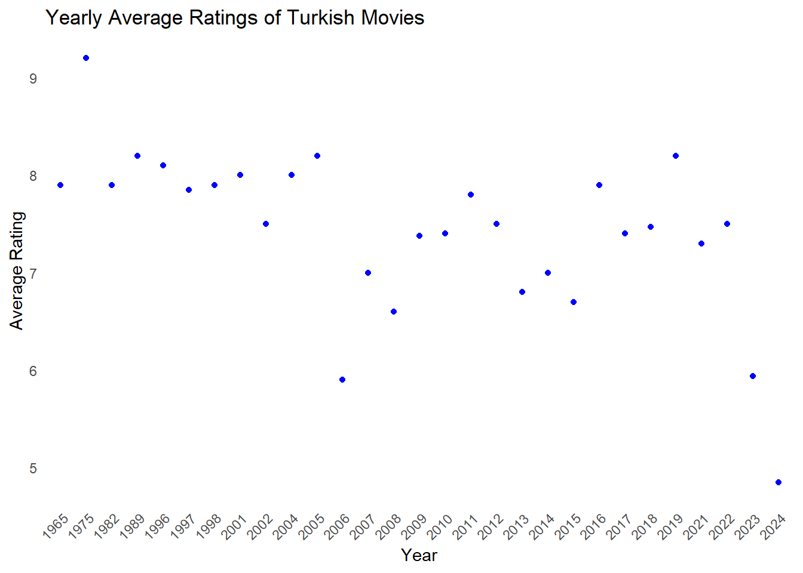
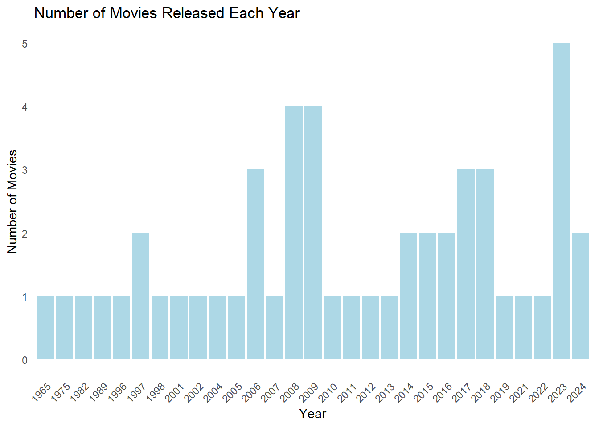
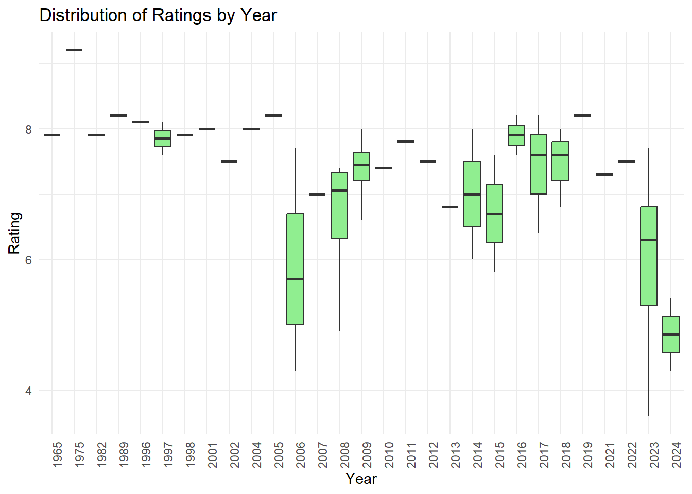

# Gerekli kütüphaneleri yükleyelimlibrary(tidyverse) # Genel veri işlemelibrary(rvest) # HTML verisi çekmek içinlibrary(stringr) # String işlemlerilibrary(stringi) # Özel karakterler için# Linkleri tanımlayalımlinkafter2011 <-"https://m.imdb.com/search/title/?title_type=feature&release_date=2011-01-01,2025-01-04&num_votes=2500,&country_of_origin=TR&count=250"linkbefore2011 <-"https://m.imdb.com/search/title/?title_type=feature&release_date=,2010-12-31&num_votes=2500,&country_of_origin=TR&count=250"# Sayfayı çekelimpage1 <-read_html(linkafter2011)page2 <-read_html(linkbefore2011)# Başlıkları alalımtitles1 <- page1 |>html_nodes(".dli-title") |>html_text()titles2 <- page2 |>html_nodes(".dli-title") |>html_text()combined_titles <-c(titles1, titles2)# Yalnızca ilk 50 başlık alalımcombined_titles <- combined_titles[1:50]# Yıl bilgilerini alalımyears1 <- page1 |>html_nodes(".dli-title-metadata-item:nth-child(1)") |>html_text()years2 <- page2 |>html_nodes(".dli-title-metadata-item:nth-child(1)") |>html_text()combined_years <-c(years1, years2)# Süre bilgilerini alalımdurations1 <- page1 |>html_nodes(".dli-title-metadata-item:nth-child(2)") |>html_text()durations2 <- page2 |>html_nodes(".dli-title-metadata-item:nth-child(2)") |>html_text()combined_durations <-c(durations1, durations2)# Rating bilgilerini alalımratings1 <- page1 |>html_nodes(".ratingGroup--imdb-rating") |>html_text()ratings2 <- page2 |>html_nodes(".ratingGroup--imdb-rating") |>html_text()combined_ratings <-c(ratings1, ratings2)# Oylama bilgilerini alalımvotes1 <- page1 |>html_nodes(".ipc-rating-star--voteCount") |>html_text()votes2 <- page2 |>html_nodes(".ipc-rating-star--voteCount") |>html_text()combined_votes <-c(votes1, votes2)# Başlık isimlerinin ikinci kısmını almak için düzenlemetitle_names1 <- page1 |>html_nodes('.ipc-title__text') |>html_text() |>tail(-1) |>head(-1) |>str_split(" ", n =2) |>unlist() |>sapply(function(x) x[2])title_names2 <- page2 |>html_nodes('.ipc-title__text') |>html_text() |>tail(-1) |>head(-1) |>str_split(" ", n =2) |>unlist() |>sapply(function(x) x[2])combined_title_names <-c(title_names1, title_names2)# Süre hesaplamaları: Saat ve Dakikahours1 <-str_extract(durations1, "\\d+(?=h)") %>%as.integer() # Saatleri Çekminutes1 <-str_extract(durations1, "\\d+(?=m)") %>%as.integer() # Dakikaları Çekhours1[is.na(hours1)] <-0minutes1[is.na(minutes1)] <-0total_duration_minutes1 <- (hours1 *60) + minutes1# Aynı işlemleri ikinci sayfa için de yapıyoruzhours2 <-str_extract(durations2, "\\d+(?=h)") %>%as.integer() # Saatleri Çekminutes2 <-str_extract(durations2, "\\d+(?=m)") %>%as.integer() # Dakikaları Çekhours2[is.na(hours2)] <-0minutes2[is.na(minutes2)] <-0total_duration_minutes2 <- (hours2 *60) + minutes2# Süreleri birleştiriyoruzcombined_durations <-c(total_duration_minutes1, total_duration_minutes2)# Rating: Parantez içerisindeki sayıları temizleyelimrating_no_parant <-str_replace_all(combined_ratings, "\\(.*\\)", "")rating_no_parant_no_space <-str_trim(str_extract(rating_no_parant, "^\\d+\\.?\\d*"))combined_ratings <-as.double(rating_no_parant_no_space)# Oylama sayılarını temizliyoruz ve sayıya çeviriyoruzvotes1 <-str_remove_all(votes1, "[^0-9.K]") # Yalnızca sayıları ve "K" harfini alvotes2 <-str_remove_all(votes2, "[^0-9.K]")votes_numeric1 <-str_remove_all(votes1, "K") %>%as.numeric() *ifelse(str_detect(votes1, "K"), 1000, 1)votes_numeric2 <-str_remove_all(votes2, "K") %>%as.numeric() *ifelse(str_detect(votes2, "K"), 1000, 1)combined_votes <-c(votes_numeric1, votes_numeric2)# DataFrame oluşturuyoruzimdb_data <-tibble(Title = combined_titles,Year = combined_years,Duration = combined_durations,Rating = combined_ratings,Votes = combined_votes)#film isimlerinde en baştaki sayıyı silmek içinimdb_data$Title <-str_remove(imdb_data$Title, "^\\d+\\.\\s*")
IMDb Turkish Films Overview
The table below showcases a collection of films from different years and genres, along with important details such as their title, release year, duration, rating, and the number of votes received. These films span a variety of time periods and have attracted significant attention from audiences.
The films are listed with their respective Title, Year of Release, Duration (in minutes), Rating (average IMDb score), and Votes (the total number of people who rated the film). These elements together provide a rich insight into the overall reception of the films, revealing which ones have captivated the most viewers and which ones have been less favorably received.
As shown in the data, certain films stand out with high ratings, reflecting strong audience approval, while others, despite their popularity, may have received lower scores. This distinction can be crucial for understanding the general perception of the films in both domestic and international movie circles.
The table below highlights the top 5 films with the highest IMDb ratings. These films have garnered impressive ratings from viewers, reflecting their strong appeal and positive reception.
Films such as Hababam Sınıfı, Yedinci Koğuştaki Mucize, and Dağ II stand out with ratings of 8.2 and above, showcasing their ability to captivate audiences with their storytelling, performances, and production quality. With Hababam Sınıfı receiving a remarkable 9.2 rating, it demonstrates the lasting cultural impact it has had. These films have received a significant number of votes, indicating their widespread popularity.
Show code
# En yüksek Rating'e sahip 5 filmtop_rated <- imdb_data |>arrange(desc(Rating)) |>head(5)# Sonuçları yazdırdatatable(top_rated)
I thoroughly enjoyed Dağ II and am eagerly looking forward to Alper Çağlar’s upcoming Göktürk Trilogy. As a fan of his work, I believe that the trilogy will offer a unique look into the rise of the Göktürk Empire. I am very curious about the war cinematics, as I expect them to be visually captivating.
Least Rated Turkish Films
In contrast, the following table displays the 5 lowest-rated Turkish films on IMDb. Despite having a substantial number of votes, these films have not been able to capture the same level of audience satisfaction. Films such as Bihter and Erdal ile Ece have received relatively low ratings, which indicates that they may not have resonated as well with viewers. These films might have a niche audience, but overall, their reception has been less favorable compared to others.
Show code
# En düşük Rating'e sahip 5 filmlowest_rated <- imdb_data |>arrange(Rating) |>head(5)# Sonuçları yazdırdatatable(lowest_rated)
I believe Recep İvedik doesn’t deserve the 4.9 rating it currently holds on IMDb. The film, known for its absurd comedy, might not be everyone’s cup of tea, but for fans of this genre, it offers a unique form of entertainment. While it may seem over-the-top and crude to some, it has a large following in Turkey, where many find it amusing in a lighthearted way. Despite the film’s outrageous humor, its rating doesn’t seem to fully reflect its appeal to its target audience.
A.R.O.G, a sci-fi comedy, has a rating of 7.3 on IMDb, which I believe is well-deserved for its creativity, humor, and memorable performances. While it may not be universally adored, its unique approach to comedy and its place in Turkish cinema make it an enjoyable watch.
On the other hand, Ahlat Ağacı has a slightly higher rating of 7.5. This film, with its rich storytelling and profound themes, delves into the complexities of life and the pursuit of one’s dreams, making it a thoughtful and impactful movie.
Analysis of IMDb Ratings Over Time and Trend Analysis
Yearly Rating Averages
Show code
library(dplyr)library(ggplot2)# Calculate the average rating per yearyearly_avg_rating <- imdb_data %>%group_by(Year) %>%summarise(avg_rating =mean(Rating, na.rm =TRUE))# Print the yearly averages for inspectiondatatable(yearly_avg_rating)
This plot represents the average IMDb ratings of Turkish movies for each year.
The averages generally range between 7 and 9, indicating relatively high-quality ratings overall.
The 1980s stand out with consistently high average ratings, possibly due to the focus on producing fewer but critically acclaimed films during that era.
There are fluctuations starting in the 2000s, but no significant long-term decline in average ratings until 2024, where there is a sharp drop, likely reflecting the lower quality or reception of movies released in that year.
Show code
# Scatter plot of yearly average ratingsggplot(yearly_avg_rating, aes(x = Year, y = avg_rating)) +geom_point(color ='blue') +labs(title ="Yearly Average Ratings of Turkish Movies", x ="Year", y ="Average Rating") +theme_minimal() +theme(panel.grid.major =element_blank(), panel.grid.minor =element_blank(), axis.text.x =element_text(angle =45, hjust =1) )

Number of Movies per Year
This plot shows the number of Turkish movies released each year.
There is a noticeable increase in movie production after the 2000s, with significant peaks in 2008 and 2024.
During the 1980s and 1990s, the number of movies produced remained quite low.
This trend indicates a revival of the Turkish film industry in recent decades, with an increase in both production and cinematic activity.
Show code
# Count the number of movies released each yearmovies_per_year <- imdb_data %>%group_by(Year) %>%summarise(movie_count =n())# Scatter plot or bar plot of the number of movies per yearggplot(movies_per_year, aes(x = Year, y = movie_count)) +geom_bar(stat ="identity", fill ='lightblue') +labs(title ="Number of Movies Released Each Year", x ="Year", y ="Number of Movies") +theme_minimal() +theme(panel.grid.major =element_blank(), panel.grid.minor =element_blank(), axis.text.x =element_text(angle =45, hjust =1) )

Box Plots of Ratings by Year
This box plot illustrates the distribution of IMDb ratings for Turkish movies by year.
In earlier years (1980s–1990s), the ratings are concentrated in a narrow range and generally skewed toward higher scores. This suggests that fewer but higher-quality films were produced during that time.
From the 2000s onward, the ratings show a wider spread, reflecting greater diversity in film quality (both high-rated and low-rated films).
Notably, 2024 shows a sharp decline in ratings, with movies in that year receiving lower overall scores compared to previous years.
Show code
# Box plot of ratings per yearggplot(imdb_data, aes(x =factor(Year), y = Rating)) +geom_boxplot(fill ='lightgreen') +labs(title ="Distribution of Ratings by Year", x ="Year", y ="Rating") +theme_minimal() +theme(axis.text.x =element_text(angle =90, hjust =1))

Correlation between Number of Votes and Rating
Show code
corr <-cor(imdb_data$Votes, imdb_data$Rating, use ="complete.obs")cat("Correlation between Votes and Ratings:", corr)
Correlation between Votes and Ratings: 0.4994442
The correlation between the number of votes and the ratings of movies in the dataset is 0.499. This indicates a moderate positive correlation, suggesting that, generally, as the number of votes a movie receives increases, its rating tends to be higher as well. However, the relationship is not very strong, meaning there are other factors at play that influence movie ratings besides the number of votes.
Correlation between Duration and Rating
Show code
corr_duration_rating <-cor(imdb_data$Duration, imdb_data$Rating)cat("Correlation between Duration and Rating:", corr_duration_rating)
Correlation between Duration and Rating: 0.2380967
The correlation between Duration and Rating is 0.238, which indicates a weak positive relationship between the two variables. This suggests that, in general, longer movies tend to have slightly higher ratings, but the correlation is not strong enough to make any definitive conclusions. The relatively low correlation implies that the duration of a movie does not have a significant impact on its rating, and other factors are likely influencing the ratings more strongly.
Turkish Movies in IMDb’s Top 1000 Rankings
The table presents a list of Turkish movies that have made it into IMDb’s Top 1000 rankings. This collection includes 11 films that have been selected based on their popularity and critical acclaim.
Show code
url <-"https://m.imdb.com/search/title/?title_type=feature&sort=release_date,asc&num_votes=2500,&groups=top_1000&country_of_origin=TR&count=250"data_html <-read_html(url)title_names <- data_html |>html_nodes('.ipc-title__text')title_names <-html_text(title_names)title_names <-tail(head(title_names, -1), -1) title_names <-str_split(title_names, " ", n =2)title_names <-unlist(lapply(title_names, function(x) { x[2] })) year <- data_html |>html_nodes(".dli-title-metadata-item:nth-child(1)")year <-as.numeric(html_text(year))top_movies <-data.frame(Title = title_names,Year = year)datatable(top_movies, caption ="Turkish Movies in the Top 1000")